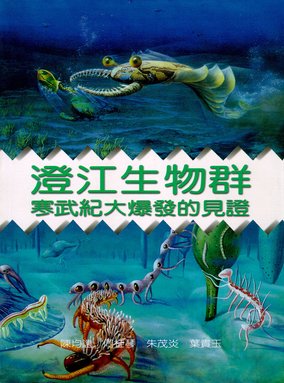
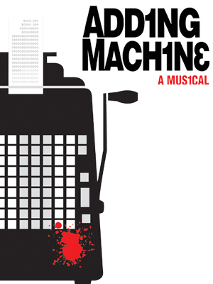

CS 152 - Lecture 1

Cay S. Horstmann
Course Objectives
- Objectives:
- To ensure that students gain an understanding of programming language design and language translation.
- To achieve competence in a functional programming language.
- What will you learn?
- How a programming language is compiled or interpreted
- How to program in paradigms other than OO
- Why should you care?
- For most of your career, you will program in a language other than Java or C...
- ...and none of us knows today what that language is
Java.* is not the End of History
- 1960: Fortran, Algol, Lisp (Dates approximate)
- 1980: C
- 1990: C++
- 1995: Java, JavaScript
- Java is showing its age
- Not “agile”
- Weak support for concurrency
- Atwood's law: "Any application that can be written in JavaScript, will eventually be written in JavaScript."
The “Cambrian Explosion” of Languages

- Lots of programming languages come and go:
- Ruby, Groovy
- Python, PHP, Perl
- Lisp, Scheme, ML, Haskell
- Smalltalk
- C#, F#
- Matlab, R, Julia
- Swift, Kotlin
- Rust
- Go
- Some are optimized for different tasks (UI, scientific programming, scripting, ...)
- Some aim to be your next general purpose language
What You Will Learn

- A functional subset of Java (instead of Scheme/ML/Haskell)
- The Scala combinator parser library (instead of JavaCC/Antlr/yacc)
- JVM code generation
- Scheme, functional JavaScript
- Prolog
- Project: Web development with alternative languages
What You Need to Succeed
- Prerequisites
- CS151: Interfaces, inner classes, generic types
- CS46A/B: Unix shell, basic scripting
- Time
- You can't expect to learn complex skills just by listening to lectures
- Spend 9 hours per week for this class
- 2.5 hours in class
- 6.5 hours (!) outside class for preparation and homework
- Laptop
- Bring it to each class meeting
- Install Java 8 and the Scala IDE
- Be able to run a Bash shell
Questions
- Ask questions right away when you are stuck
- Use the Piazza online discussion group.
- You'll get a better grade if you ask lots of questions.
- Answer your peers' questions. You'll get a better grade if you do.
- Private or confidential questions—email or office hours
Plagiarism and Cheating
- When you submit work, it must be your own personal, individual intellectual creation
- Not that of your “study group”
- Can you copy and paste?
- Always ok to copy
- Pasting is the problem ☺
- Ok to use code from the course materials without attribution
- Otherwise, you must attribute the source
- Don't post/email working code
- You don't know what the recipient will do with it
- Sending someone a solution is cheating
- I periodically run a plagiarism checker
- If I find cheating, I don't play Sherlock Holmes to find who wrote it—I report both
- I report everyone whom I find cheating to Student Conduct
- I have to
- And I will recommend that an appropriate penalty is for you to fail the course
Git

- You submit all class work via Git
- Make a private repo on BitBucket or GitHub
- If you use your SJSU email address, BitBucket gives you a free account with unlimited private repos
- Add me as a contributor to your repo. My BitBucket and GitHub ids are
cayhorstmann
- Use a single repo for all homework and exams
- Make folders
hw1, hw2, lab1, exam1, ...
- Commit at least once a day for homework/every 10 min in an exam
- Push before midnight on due date. Grace period until 6am next morning. No mercy afterwards.
- Never used Git? Check out parts A and D in this CS46B lab.
Adding

- Do homework 1 and send me your answers.
- I will send you an add code when space becomes available. Use it within 24 hours, or it will become invalid
- Show up for all classes/labs even if you haven't received your code
Things To Do Today
- Log into Piazza
- Install Java 8, Scala, and Git on your laptop
- If you run Windows and don't know your way around the Windows 10 subsystem for Linux, or if you run MacOS and don't know how to navigate the difference between Linux and BSD, install VirtualBox and a Linux VM.
- Complete Homework 1 and send me your Git repo URL
- Important: In lieu of a roll call today, you must turn in homework 1, or I will drop you from this course for lack of presence/prerequisites.
Lab

- Getting going with Piazza
- Getting going with Git
- Looking at the homework assignment
Lecture 1 Clicker Question 1
What happens with this code?
List<String> strings = new ArrayList<>(Arrays.asList("Harry", "Sally"));
List<Object> objects = strings;
objects.set(0, new Integer(42));
String first = strings.get(0);
- The code compiles and runs without errors
- The code throws an exception in line 3
- The code throws an exception in line 4
- The code doesn't compile
Lecture 1 Clicker Question 2
What happens with this code?
List<String> strings = new ArrayList<>(Arrays.asList("Harry", "Sally"));
List objects = strings;
objects.set(0, new Integer(42));
String first = strings.get(0);
- The code compiles and runs without errors
- The code throws an exception in line 3
- The code throws an exception in line 4
- The code doesn't compile
Lecture 1 Clicker Question 3
What happens with this code?
String[] strings = { "Harry", "Sally" };
Object[] objects = strings;
objects[0] = new Integer(42);
String first = strings[0];
- The code compiles and runs without errors
- The code throws an exception in line 3
- The code throws an exception in line 4
- The code doesn't compile
Installing Git
Adding to the Repository
- In the
cs152 subdirectory that was created by git clone, make a subdirectory hw1
- In that directory, make a file
aboutme.txt as described in Homework 1
- Open a terminal and change to the directory into which you cloned the repo:
cd cs152
- Type
git add hw1/aboutme.txt
- Type
git commit -a -m "Started homework 1 "
- Type
git push origin master
- In the BitBucket web interface, locate
hw1/aboutme.txt
- Did you find it? Hooray—you have just reached level 2.
A UML Diagram